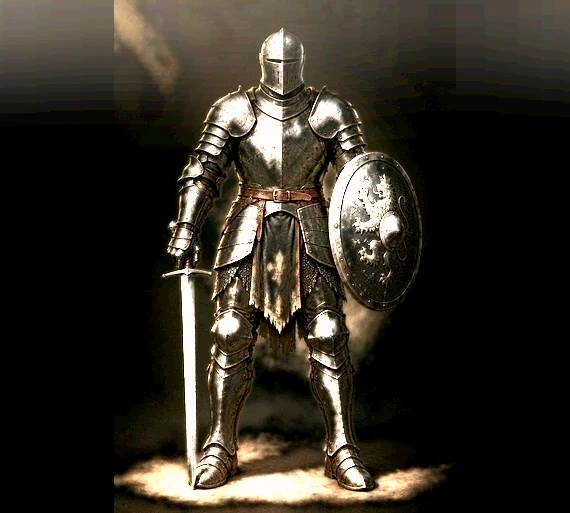
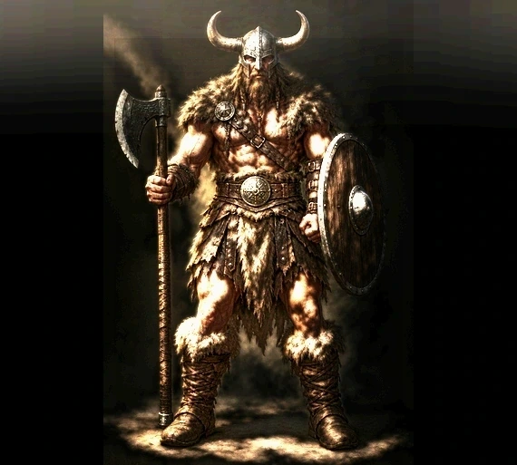
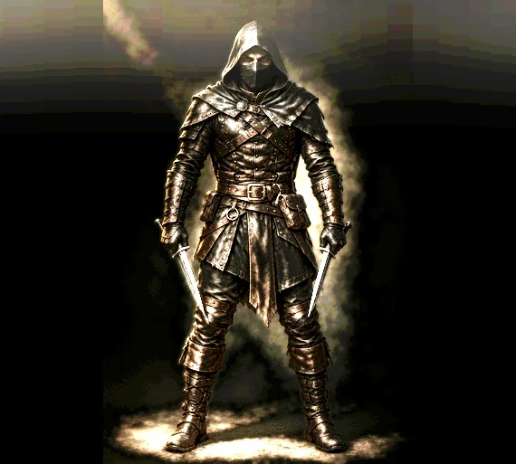

A sinistra il personaggio com'è adesso, a destra con l'accensione del sesto premio (75 giorni di fila). L'aura è uguale nelle tre classi: se cambiasse colore sembrerebbe parte della classe, e non è.



Le quattro scintille sono le stesse dell'app: nell'app le crea il codice, qui sono messe a mano perché la pagina non dipenda dall'app.